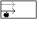
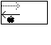
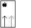
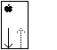
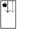
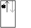
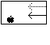
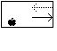

Legacy Document
Important: This document is part of the Legacy section of the ADC Reference Library. This information should not be used for new development.
Current information on this Reference Library topic can be found here:
ADC Home > Reference Library > Technical Notes > Legacy Documents > Hardware & Drivers >
Important: This document is part of the Legacy section of the ADC Reference Library. This information should not be used for new development.
Current information on this Reference Library topic can be found here:
|
Why a 'pslt' Resource?For implementation reasons, the NuBus connectors on a Macintosh II-family motherboard map into differing areas of the NuBus address space in an unexpected manner. For example, the three slots of a IIcx are $9/$A/$B while the slots on a IIci are $C/$D/$E. Although the Slot Manager can return all the pertinent address space information uniformly, it may be difficult to present a consistent human interface to users who need to identify a particular card in a particular slot. A good example of this is a network router where there may be several identical cards. Although lookup tables can handle known products, new products present an interface challenge, complicated by the new "tower" format machines. To address this problem, we introduce the concept of "pseudo-slot" numbering, which provides a simple and consistent mapping of the interface presentation of the machine to the physical NuBus slot implementation. These resources are available in System 7.0 and later. The basic pseudo-slot rules are simple:
The information that maps the pseudo-slot to the physical slot is contained in
a
pseudo-slot,
|
type 'pslt' {
integer = $$Countof(pSlotSpec); /* # of slots */
integer; /* NuBus orientation */
longint; /* psltFlags, reserved */
wide array pSlotSpec {
integer; /* NuBus slot # */
integer; /* pseudo slot # */
};
};
|
#ofSlots This is fairly obvious. This number is 6 for the Macintosh ii, IIx and
IIfx and 3 for the Macintosh IIcx and IIci, etc. The number represents the
number of NuBus slots that are physically in the box that you are asking about.
If you ask about the Macintosh IIsi, you will find that there is not a 'pslt'
resource, because the IIsi slot can take either a NuBus card or a PDS card and
there is no way to tell the difference between the two types.
Orientation This is not an obvious value. There are eight defined values which you may see in this field. In the diagrams the black line is the NuBusSlot# and the gray line is the pseudoslot#, the Apple logo shows the horizontal/vertical orientation of the box. the meaning of the orientation numbers are as follows:

#define horizAscendingRight 0 - The machine's physical orientation is horizontal and the slots are numbered in ascending order starting from the left of the box, as seen from the front of the machine. So as the pseudoslot# increases so does the NuBusSlot#. Most of the current NuBus Macintosh machines have this type of orientation.

#define horizDescendingRight 1 - The machine's physical orientation is horizontal and the slots are numbered in descending order starting from the left of the box, as seen from the front of the machine. So as the pseudoslot# increases the NuBusSlot# decreases. There are currently no Macintosh machines which have this orientation.

#define vertAscendingBottom 2 - The machine's physical orientation is vertical and the slots are numbered in ascending order starting from the bottom of the box. So as the pseudoslot# increases so does the NuBusSlot#. There is currently only one Macintosh with this orientation and it is the Quadra 900.

#define vertDescendingBottom 3 - The machine's physical orientation is vertical and the slots are numbered in descending order starting from the bottom of the box. So as the pseudoslot# increases the NuBusSlot# decreases. The Quadra 700 is currently the only Macintosh with this orientation.

#define vertAscendingTop 4 - The machine's physical orientation is vertical and the slots are numbered in ascending order starting from the top of the box. So as the pseudoslot# increases so does the NuBusSlot#. There are currently no Macintosh machines which have this orientation.

#define vertDescendingTop 5 - The machine's physical orientation is vertical and the slots are numbered in descending order starting from the top of the box. So as the pseudoslot# increases the NuBusSlot# decreases. There are currently no Macintosh machines which have this orientation.

#define horizAscendingLeft 6 - The machine's physical orientation is horizontal and the slots are numbered in ascending order starting from the right of the box, as seen from the front of the machine. So as the pseudoslot# increases so does the NuBusSlot#. There are currently no Macintosh machines which have this orientation.

#define horizDescendingLeft 7 - The machine's physical orientation is horizontal and the slots are numbered in descending order starting from the right of the box, as seen from the front of the machine. So as the pseudoslot# increases the NuBusSlot# decreases. There are currently no Macintosh machines which have this orientation.
NuBusSlot# The rest of the values in the resource are pairs of values. The first value is the hardware number of the slot (the value that the Slot Manager and hardware use).
pseudoslot# The second value of the pairs is the number that is given to the slot for this resource. The number one slot is always the slot that is closest to the side of the box.
The 'pslt' resource IDs are the same as the Gestalt selector values for a
particular machine. So if you are on a Macintosh IIfx and you would like to know
which 'pslt' to look at for that machine, you will need to get the
gestaltMachineType for the machine that you are on; then use this value to
determine the correct 'pslt' resource ID to look for. When you make the call to
get the 'pslt' resource, you will want to use the call RGetResource, since the
resource may be in ROM. So if Gestalt returns a gestaltMachineType value of 13,
you will look for resource 13 and get the configuration for the
Macintosh iifx.
Only machines with true NuBus on the motherboard will have 'pslt' resources.
Machines like an Macintosh LC or IIsi won't since the physical alignment of the
slot is harder to determine. If you don't find a 'pslt' for this 'mach' type,
then this machine doesn't have NuBus (although you could have used Gestalt to
find that out).
The following values are the straight hexadecimal numbers from ResEdit.
Macintosh ii (ID 6):
0006 |0000 |0000 0000 |0009 0001 |000A 0002 |000B 0003 |000C 0004 |000D 0005 |000E 0006At this point I am sure that you are asking what all these numbers mean, well I will tell you.
The first number (0006) says that there are six slots in the machine that this resource documents. The next value is the orientation (0000) and from above we see that this machine is oriented horizontally and has the NuBusSlot# increasing at the same time as the pseudoslot# increase. It also indicates that the slot numbers increase from the left of the box to the right (as seen from the front of the box). The next number (0000 0000) is reserved. Now we have the slot numbers that say that slot 0009 (NuBusSlot#) is slot one (0001) and is the closest slot to the side of the box, slot 000A translates into slot two (0002), etc . . . So, slot A is to the right of slot 9--as seen from the front of the machine.
Macintosh Quadra 700 (ID 22):
0002 |0003 |0000 0000 |000D 0002 |000E 0001The first number (0002) says that there are two slots in the machine that this resource documents. The next value is the orientation (0003) and from above we see that this machine is oriented vertically and has the NuBusSlot# decreasing at the same time as the pseudoslot# increase. It also indicates that the slot numbers decrease from the bottom of the box up. The next number (0000 0000) is reserved. Now we have the slot numbers that say that slot 000D (NuBusSlot#) is slot two (0002), and slot 000E translates into slot one (0001) and is the closest slot to the side of the box. Remember that all slots that have the pseudoslot# of one are the slots closest to the side of the box; therefore, shot D is above slot E.
Inside Macintosh, Volume VI, Compatibility Guidelines
Technical Note M.OV.GestaltSysenvirons -- Gestalt and Sysenvirons : A Never Ending Story
|
|
Acrobat version of this Note (80K) |
|